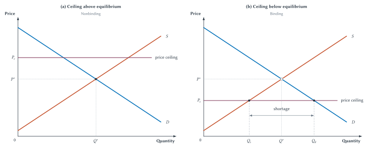
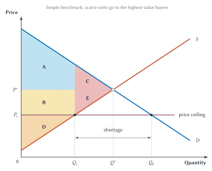
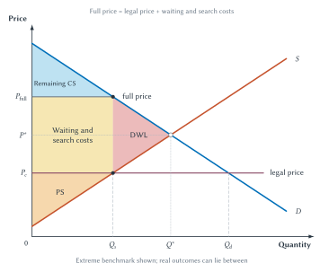
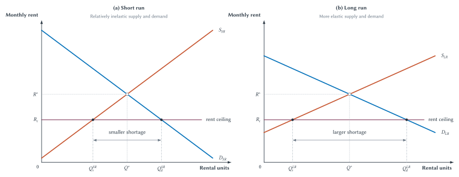
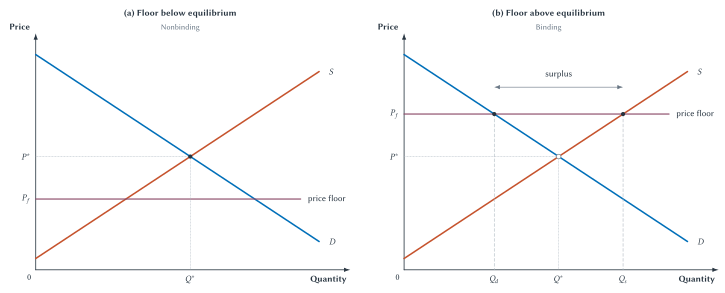
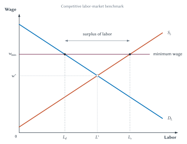

Chapter 8
Price Controls and Regulation
Price ceilings and floors can change money prices, but shortages, surpluses, waiting, quality, access, and investment determine their full effects.
Imagine that New York City limits the rent on an apartment to $1,500 a month even though many people would willingly pay more to live there. A tenant who obtains that apartment may be much better off. But Manhattan has fewer apartments than people who would like to live there at that rent. The law can change who gets those scarce apartments. It cannot make room for everyone who wants one.
Some would-be tenants will search longer. Some will join waiting lists. Some may rely on personal connections. Landlords may screen applicants more carefully, reduce maintenance, convert apartments to other uses, or become less willing to build rental housing.
The government can choose the legal rent. It cannot choose how many apartments renters want or how many landlords offer at that rent.
That distinction drives the entire chapter:
If prices cannot adjust, something else adjusts.
Price controls often pursue understandable goals. Rent controls seek affordability and housing stability. Minimum wages seek higher earnings. Emergency price limits seek access during a crisis. Economic analysis does not begin by dismissing those goals. It asks how the rule changes choices, who receives the benefit, who is left out, and whether another policy might achieve the goal with fewer costs.
The supply-and-demand tools from Chapters 3 and 4 show whether a control creates a shortage or surplus. Elasticity from Chapter 5 helps us see why the effects can grow over time. The welfare tools from Chapters 6 and 7 show who gains, who loses, and which gains from trade disappear.
Chapter 7 did not claim that taxes are painless. An ordinary tax creates a wedge, reduces the number of trades, and produces deadweight loss. But the tax also raises revenue. That revenue can finance roads, courts, schools, and other public services whose value may justify the cost of collecting it.
A price control is different. It raises no revenue and does not produce any of the apartments, gasoline, or jobs that are missing at the controlled price. It simply prevents price from clearing the market and pushes scarcity into less visible forms. Taxes may be a necessary cost of financing government. Price controls are more often an unforced error: they create an economic loss without generating the public resources that provide the usual justification for a tax.
Sideline
A Necessary Cost Versus An Unforced Error
Taxes can create deadweight loss while financing valuable public services. Price controls create shortages or surpluses, raise no revenue, and do not increase the available supply. Good intentions do not erase that difference.
Key Point
Controls Shift The Margin Of Adjustment
When the money price cannot adjust, scarcity is allocated through other margins: time, access, quality, search, relationships, rationing rules, resale, or informal payments.
Legal Prices And Market-Clearing Prices
A price control places a legal limit on the price that buyers and sellers may use. A price ceiling sets a legal maximum. A price floor sets a legal minimum.
The first question is not whether a control has been announced. It is whether the control prevents the market from reaching equilibrium.
| Term | Meaning |
|---|---|
| Price ceiling | A legal maximum price. |
| Price floor | A legal minimum price. |
| Binding control | A legal price that prevents the market from reaching equilibrium. |
| Nonbinding control | A legal price that does not change the equilibrium outcome. |
| Shortage | Quantity demanded exceeds quantity supplied at the legal price. |
| Surplus | Quantity supplied exceeds quantity demanded at the legal price. |
| Non-price rationing | Allocation by waiting, search, rules, relationships, quality changes, or informal payments rather than by price alone. |
Table 8.1. The basic language of price controls. Always determine whether a control binds before predicting a shortage or surplus.
A control is nonbinding when buyers and sellers can still reach the market equilibrium without violating it. A ceiling of $10 in a market whose equilibrium price is $6 changes nothing. Sellers already charge less than the legal maximum. A floor of $4 in the same market also changes nothing because sellers already receive more than the legal minimum.
A control is binding when it blocks the equilibrium price. A ceiling binds when it is below equilibrium. A floor binds when it is above equilibrium.
The word binding does not mean the law is enforced especially harshly. It means the legal limit actually changes the market outcome.
When a nonbinding ceiling is followed by a low price, the law deserves no credit. The market price was already below the limit.
Price Ceilings
Figure 8.1 compares a nonbinding ceiling with a binding ceiling. Both panels begin with the same demand curve, supply curve, equilibrium price \(P^*\), and equilibrium quantity \(Q^*\).

Figure 8.1. A price ceiling matters only when it is below equilibrium. The nonbinding ceiling leaves the market unchanged. The binding ceiling creates a shortage because \(Q_d\) exceeds \(Q_s\) at the legal price.
In the left panel, the ceiling lies above \(P^*\). Buyers and sellers can trade at equilibrium without breaking the law, so the ceiling is nonbinding.
In the right panel, the ceiling \(P_c\) lies below \(P^*\). At that lower price, buyers want \(Q_d\), while sellers offer only \(Q_s\). Because \(Q_d>Q_s\), the market has a shortage.
The shortage does not mean that every unit of the good vanishes. It means that buyers want more than sellers offer at the legal price. Only \(Q_s\) units are available, even though buyers would like \(Q_d\) units.
Chapter 4 explained that a shortage normally puts upward pressure on price. Buyers compete for the scarce units, and sellers have a reason to raise price. A binding ceiling blocks that adjustment. The pressure does not disappear. It moves somewhere else.
A price ceiling does not eliminate rationing. It replaces rationing by money price with rationing by waiting, search, connections, rules, or reduced quality.
Sellers might ration by first-come-first-served lines, applications, purchase limits, or personal relationships. Buyers may spend time searching. Quality may fall. Resale markets may appear. The legal price is only one part of what buyers give up to obtain the good.
Common Mistake
A Lower Price Is Not Always A Lower Cost
If a ceiling creates shortages, consumers may pay through waiting, search, uncertainty, or reduced quality.
The ceiling therefore divides buyers into at least two groups. Buyers who obtain the good at the controlled price may gain. Buyers who cannot obtain it may lose, even though the posted price is lower. The graph cannot tell us which individual buyers enter each group until we know how the scarce units are allocated.
The Simple Welfare Effect Of A Ceiling
Chapter 6 showed that the competitive equilibrium maximizes total surplus when the competitive benchmark applies. At \(Q^*\), every unit that buyers value more than it costs sellers is traded.
A binding ceiling reduces quantity to \(Q_s\). Some mutually beneficial trades between \(Q_s\) and \(Q^*\) no longer occur. Figure 8.2 uses lettered areas to separate the transfer from sellers to successful buyers from the gains that disappear.
Before using the letters, we need two clean assumptions:
- The \(Q_s\) available units go to the buyers with the highest willingness to pay.
- Buyers incur no waiting, search, or other costs to obtain those units.
Those assumptions make the first calculation manageable. We will relax them immediately afterward.

Figure 8.2. A binding ceiling transfers some surplus and prevents some gains from trade. Under the clean allocation assumptions, area \(B\) moves from producers to successful buyers, while \(C+E\) is deadweight loss.
Before the ceiling:
- Consumer surplus is \(A+C\).
- Producer surplus is \(B+D+E\).
- Total surplus is \(A+B+C+D+E\).
After the ceiling:
- Consumer surplus is \(A+B\).
- Producer surplus is \(D\).
- Deadweight loss is \(C+E\).
Area \(B\) has not vanished. It transfers from sellers to the buyers who obtain the good at the lower price. Producers lose \(B+E\). Consumers as a group gain the transfer \(B\) but lose area \(C\) from transactions that no longer occur.
Areas \(C+E\) are different. They represent units between \(Q_s\) and \(Q^*\) that buyers valued more than sellers’ costs. The ceiling prevents those trades, so their surplus is never created.
This explains why a ceiling cannot be judged by looking only at the lower price. Some buyers gain a transfer. Sellers lose. Other buyers are excluded. Total surplus falls because quantity falls.
Sideline
The Simple Diagram Is A Benchmark
The area calculation assumes that the available units go to the highest-value buyers without queue or search costs. Real controlled markets can allocate differently and impose additional costs. The diagram remains useful, but it does not capture every consequence of a shortage.
If the available units instead go to buyers who happen to arrive first, have the right connection, or satisfy an arbitrary rule, some higher-value buyers may be left out. Economists call that misallocation: the scarce units do not necessarily reach the people who value them most highly. Research on rent-controlled housing has found evidence consistent with this kind of mismatch.1
The clean diagram also assumes that obtaining the good is costless. A line at a gasoline station makes clear why that assumption can fail.
The Full Price Of A Controlled Good
The posted price is the money amount written on the sign or lease. The full price includes the money price plus the value of time, effort, uncertainty, reduced quality, and other sacrifices required to obtain the good.
Suppose an apartment rents for $1,500, but finding one requires repeated applications, unpaid time away from work, and months of searching. The legal rent is still $1,500. The apartment is not truly costless to find.
Figure 8.3 shows an extreme benchmark. Competition for the \(Q_s\) available units creates waiting and search costs until the full price reaches the height of demand at \(Q_s\).

Figure 8.3. Buyers may pay with time and effort as well as money. In this extreme benchmark, competition for scarce units turns much of the apparent consumer gain into waiting and search costs.
The waiting-and-search area is a real cost. Time spent in line could have been used for work, family, rest, or another activity. Repeated searching uses effort and information. Uncertainty may lead buyers to keep backup plans or accept a lower-quality option.
In this extreme case, competition for the controlled good uses up much of the gain from paying a lower money price. Economists sometimes call this rent dissipation: people spend resources competing for a valuable benefit, and the competition consumes part of that benefit.
The figure is not a prediction that every price ceiling eliminates nearly all consumer surplus. Some markets use lotteries or formal waiting lists. Some buyers have low waiting costs. Some controls are weakly binding. The point is narrower: lowering the posted price does not eliminate scarcity, and the simple area diagram can miss what buyers must do to obtain the good.
Nor must every real outcome fit neatly between Figures 8.2 and 8.3. Quality changes, favoritism, misallocation, illegal payments, and reduced future supply can add effects that neither clean benchmark fully measures.
Rent control puts all these margins in one familiar market.
Rent Control In The Short Run And Long Run
Return to Manhattan. Many people want to live near jobs, culture, transportation, and family. The city can set a maximum rent, but it cannot create enough apartments for everyone who wants one at that rent.
The shortage may initially appear modest because housing supply and demand respond slowly. The number of apartments is largely fixed in the short run. Tenants also need time to move, change jobs, form new households, or search elsewhere.
Over time, more choices become possible. Owners can convert units, delay construction, reduce rental investment, or leave the controlled sector. Renters can change locations, living arrangements, and household size. Supply and demand therefore become more responsive.

Figure 8.4. A rent-control shortage can grow over time. As owners and renters gain more ways to adjust, the long-run gap between rental units demanded and supplied becomes larger.
The figure does not say that every owner immediately removes an apartment or that every renter rushes into the city. It shows how the range of possible responses expands with time. The longer the control remains, the more the market can adjust along margins other than rent.
Swedish economist Assar Lindbeck summarized the cumulative danger in intentionally severe language:
“Next to bombing, rent control seems in many cases to be the most efficient technique so far known for destroying cities.”2
The comparison is rhetorical, not a measurement. Its economic meaning is concrete. A rent ceiling discourages maintenance and construction, encourages conversion, locks current tenants into valuable controlled units, and leaves outsiders competing for a shrinking share of the market. The damage builds gradually even when every occupied apartment does not visibly deteriorate.
| Margin | How It Can Adjust |
|---|---|
| Waiting and search | Renters spend more time finding available units. |
| Allocation rules | Waiting lists, lotteries, applications, or eligibility rules determine access. |
| Relationships and favoritism | Connections or informal knowledge may affect who hears about a unit. |
| Maintenance and quality | Lower rent can reduce incentives to maintain or improve units. |
| Supply over time | Owners may convert units, delay construction, or reduce rental supply. |
| Mobility | Tenants with controlled units may move less often. |
Table 8.2. Rent control protects selected incumbents by shifting adjustment elsewhere. The lower legal rent is purchased with more search, weaker mobility, lower quality, and less future supply.
These effects divide people in ways that a simple label such as “tenant” can hide. A current tenant who keeps a controlled apartment may benefit from lower rent and greater stability. That gain is real, but it is not evidence that rent control makes housing broadly affordable. A future renter faces fewer available units and a longer search. An owner may change how the property is maintained or used. A worker may be less willing to move to the city because housing is difficult to find.
Evidence From San Francisco
San Francisco’s 1994 rent-control expansion created a useful comparison. The policy extended rent control to small multi-unit buildings constructed before 1980, while similar buildings constructed later remained exempt.
Rebecca Diamond, Tim McQuade, and Franklin Qian found two important effects. Tenants covered by the expansion became less likely to move, showing that rent control provided real housing stability to protected incumbents. At the same time, affected landlords reduced the supply of covered rental housing by about 15 percent through conversion and redevelopment.3
The findings are not two equal entries that leave the policy verdict suspended. The stability benefit arose because a controlled apartment became especially valuable to keep. That same lock-in reduced mobility, while the supply response made the broader housing shortage worse. Rent control benefits the people fortunate enough to hold protected units by shifting costs toward people trying to enter the market later.
The evidence therefore reinforces the model rather than rescuing the policy from it. As a general strategy for making housing widely available and affordable, rent control fails: it treats the symptom of high rent by weakening the supply response needed to relieve the underlying scarcity. Assistance aimed directly at low-income renters or reforms that permit more housing construction address the affordability problem without suppressing the price signal in the same way.
Gasoline lines provide a more visible version of the same basic logic. ## Gasoline Lines And Rationing By Waiting
In December 1973, photographer David Falconer documented a gasoline line in Portland, Oregon. Federal price controls limited how gasoline prices could adjust, so shortages at controlled stations were rationed partly by waiting. A red “SORRY!” sign was placed on the last car expected to receive fuel. Drivers behind that car could remain in line, but the posted gasoline price would not help them obtain gasoline that was no longer available.
Figure 8.5. A shortage is rationed somehow. The “SORRY!” sign marks the last car expected to receive gasoline; other drivers pay through waiting and uncertainty without obtaining fuel. Photograph by David Falconer, Portland, December 1973, National Archives Identifier 555459, public domain.4
Robert Deacon and Jon Sonstelie studied gasoline queues as a natural experiment in rationing by waiting.5 A driver could seek a lower money price at a station with a long line or a higher money price where the wait was shorter. The choice revealed that time has value.
A line does not create more gasoline. It decides who receives the gasoline that is available. People with flexible schedules or low waiting costs may be more likely to obtain it. People with demanding jobs, caregiving duties, or urgent travel needs may be less able to wait even if they value the gasoline highly.
Other rules can replace or supplement waiting.
| Mechanism | Example |
|---|---|
| Waiting | Lines for gasoline, apartments, or tickets. |
| Search | More time spent finding sellers or available units. |
| Rationing rules | First-come-first-served, odd-even rules, purchase limits, or eligibility rules. |
| Quality changes | Smaller portions, lower maintenance, fewer services, or reduced amenities. |
| Favoritism or connections | Sellers choose among buyers using relationships or private information. |
| Informal payments or black markets | Side payments, resale, or illegal exchange. |
Table 8.3. When price cannot clear a market, another rule allocates the scarce units. Each method changes who receives the good and what they must give up to obtain it.
Some of these methods may be chosen deliberately. A lottery can give people an equal chance. Eligibility rules can direct goods toward a target group. Purchase limits can spread a fixed supply across more buyers. The economic question is not whether allocation can occur without a market-clearing price. It can. The question is what the replacement rule costs and how well it serves the policy’s goal.
Price floors reverse the direction of the legal limit, but the same binding test still comes first.
Price Floors
A price floor is a legal minimum price. A floor below equilibrium is nonbinding because the market can reach equilibrium without violating it. A floor above equilibrium is binding.

Figure 8.6. A price floor matters only when it is above equilibrium. The binding floor creates a surplus because \(Q_s\) exceeds \(Q_d\) at the legal price.
At the binding floor \(P_f\), sellers want to offer \(Q_s\), while buyers want only \(Q_d\). The difference is a surplus.
As with a shortage, the market must deal with the mismatch. Sellers may compete through quality, advertising, or added services. Some may be unable to sell. If a government promises to buy the surplus, taxpayers finance the purchase and the government must store, use, or dispose of the goods. Agricultural support programs have sometimes taken this form.
A floor can raise the price received on units that are sold. It does not guarantee that every seller can sell the desired quantity.
The most familiar price floor is a minimum wage.
Minimum Wages
In a labor market, the price of labor is the wage. Firms demand labor because workers help produce goods and services. Workers supply labor by offering their time and skills.
Figure 8.7 applies the ordinary floor model to a competitive labor market. The equilibrium wage is \(w^*\) and employment is \(L^*\). A minimum wage \(w_{\min}\) above equilibrium is binding.

Figure 8.7. The competitive benchmark predicts a surplus of labor. At a binding minimum wage, workers offer \(L_s\) while firms demand \(L_d\).
The higher wage makes more people willing to work, while firms demand fewer labor hours or workers. The gap \(L_s-L_d\) is a surplus of labor. It appears as unemployment, fewer openings, reduced hours, or more applicants competing for each job.
Workers who keep their jobs at the higher wage can gain. Workers who cannot find work, lose hours, or face fewer openings can lose. Employers pay more per unit of labor they continue to hire and may change prices, production methods, or staffing.
The downward-sloping labor-demand curve is central. When labor becomes more expensive, firms seek ways to use less of it. They may employ fewer workers, offer fewer hours, slow hiring, adopt labor-saving equipment, reduce output, or reorganize production. Benefits, job requirements, and product prices may also change. Those are different forms of adjustment to a higher wage, not reasons to expect labor demand to slope upward.
Chapter 18 returns to labor demand, employer power, productivity, and wage determination. For now, the conclusion is straightforward: a binding minimum wage raises the wage for workers who remain employed but reduces labor demanded and creates a surplus of workers seeking jobs at that wage.
In the competitive model, the law can require a higher wage for a job that exists. It cannot require the job to exist.
Target The Help Directly
Rent controls and minimum wages are often defended as ways to help households with low incomes. But both policies try to provide that help by controlling a market price. The resulting shortage or surplus can prevent some of the intended beneficiaries from obtaining an apartment or a job at all.
A housing voucher or rent subsidy gives eligible households money they can use toward housing. It helps the household afford rent without setting a legal maximum that discourages landlords from supplying apartments. Giving renters more money does not create more apartments. Unless construction can respond, part of the assistance may be bid into higher rents. That is a reason to allow more housing supply, not a reason to create a rent ceiling.
A wage subsidy adds to the earnings of lower-wage workers through a government payment or tax credit. Unlike a minimum wage, it does not raise the employer’s cost of hiring labor by the full amount of the worker’s gain. It can therefore raise workers’ take-home income while encouraging rather than discouraging employment.
These policies are not free. Taxpayers fund them, administrators must determine eligibility, and poorly designed phaseouts can weaken work incentives. But if the goal is to help low-income households, targeted assistance is generally more effective than a price control because it addresses the income problem directly instead of reducing the supply of apartments or jobs.
Key Point
Target The Problem, Not The Price
Housing vouchers and wage subsidies help low-income households directly. Price ceilings and wage floors try to help by controlling prices, which creates shortages or surpluses and excludes some of the people the policy is meant to assist.
When Does Regulation Need A Justification?
Chapter 6 established a benchmark. In a competitive market without a market failure, equilibrium directs goods toward buyers who value them most, production toward lower-cost sellers, and quantity toward the level that maximizes total surplus.
A regulation that moves the market away from that outcome therefore needs a reason. That does not mean regulation can never be justified. It means the problem should be identified rather than merely asserted.
Possible reasons include market power, pollution or other external effects, information problems, public goods, weak property rights, and distributional goals. Chapters 10 through 12 examine several of these problems directly.
Distribution also matters even when the market is efficient. A market can maximize total surplus while producing an income or access pattern that voters consider unacceptable. The policy question is then whether a price control, transfer, voucher, tax credit, supply expansion, or another rule best addresses that concern.
Sideline
Regulation Needs A Reason
If a competitive market has no important market failure, moving it away from equilibrium reduces total surplus. A regulation may still pursue a distributional goal, but the goal and the policy’s trade-offs should be stated clearly.
| Question | Why It Matters |
|---|---|
| What is the starting point? | In the competitive benchmark, equilibrium maximizes total surplus. |
| What problem is the rule trying to solve? | The concern may involve market power, external effects, information, public goods, weak institutions, or distribution. |
| What else will adjust? | Rules can change quantity, quality, entry, search, waiting, investment, or informal exchange. |
| Who gains and who bears costs? | Benefits may be visible and concentrated while costs are hidden or spread across many people. |
| What political incentives shape the rule? | Organized groups, regulators, voters, and incumbent firms may have different goals. |
| Is there a better-targeted alternative? | Transfers, vouchers, supply expansion, disclosure, antitrust, or liability rules may address the problem differently. |
Table 8.4. Evaluate a regulation against both the market problem and the rule’s consequences. A sincere goal does not guarantee that every policy aimed at it will work well.
Public Choice And The Rules We Actually Get
Regulations are not designed by an all-knowing planner standing outside the economy. They are created through political institutions populated by voters, legislators, regulators, firms, workers, and advocacy groups. Each has limited information and incentives of its own.
Public choice applies economic reasoning to political decisions. It asks how people respond to incentives inside government just as they do in markets.
One important pattern is concentrated benefits and dispersed costs. A rule may create a large benefit for a small, organized group while imposing a small cost on each of millions of consumers or taxpayers. The organized group has a strong reason to lobby. Each individual paying the small cost has little reason to study the rule or organize against it.
Regulations can also protect incumbent firms. A licensing rule may improve quality or safety, but it may also make entry harder for new competitors. A complex requirement may be manageable for a large existing firm but expensive for a small entrant.
Regulatory capture occurs when a regulator comes to serve the industry or group it is supposed to oversee rather than the broader public. Capture is a possibility, not an explanation for every rule.
Historical Note
Economist Profile: George Stigler
George Stigler (1911-1991) helped make regulation itself an object of economic study. Instead of assuming that a rule automatically serves the public interest, he asked which groups demanded it, who received concentrated benefits, who paid dispersed costs, and how political incentives shaped the result.6
Stigler’s lesson was not that every regulation is captured or harmful. It was that the stated purpose of a rule and its actual effects may differ. Regulation should be studied with the same attention to incentives, information, and unintended consequences that economists apply to markets.
Public-choice analysis does not erase public-interest reasons for regulation. Pollution, fraud, monopoly, unsafe products, and weak property rights can be real problems. The relevant comparison is not an imperfect market against a perfect government. It is one imperfect institution against the feasible alternatives.
Comparing Policy Trade-Offs
Price controls make one part of a transaction more visible by limiting the money price. They can also push adjustment into less visible forms.
A rent ceiling protects selected current tenants by reducing access and future supply for others. A gasoline ceiling may hold down the posted price but produce lines and uncertainty. A minimum wage may raise pay for some workers while changing hiring, hours, prices, benefits, or job requirements. None of those statements alone settles every policy question, but rent control’s repeated shortage, quality, allocation, and supply effects make it a poor tool for broad housing affordability.
| Policy Question | Why It Matters |
|---|---|
| Goal | Is the policy trying to improve affordability, income, access, stability, or bargaining power? |
| Binding status | Does the control actually prevent the market price from reaching equilibrium? |
| Quantity effect | Does the rule create a shortage or surplus? |
| Allocation mechanism | If price cannot allocate the good, what does? |
| Quality and investment | Does the rule change maintenance, quality, entry, or long-run supply? |
| Distribution | Who benefits, who is left out, and who bears hidden costs? |
| Alternatives | Could wage subsidies, housing vouchers, cash transfers, supply expansion, or a more targeted rule address the problem more directly? |
Table 8.5. Price-control analysis is a comparison of goals and consequences. Begin with the intended benefit, then trace the binding condition, quantity response, allocation rule, and long-run adjustments.
The most durable habit is to follow the response. A policymaker can set a legal price, but buyers, sellers, workers, landlords, firms, and regulators still make choices. Scarcity remains. Incentives remain. Time and information remain limited.
That is why “if prices cannot adjust, something else adjusts” is more than a slogan. It is a method for discovering the parts of a policy that the legal price leaves out.
Chapter Study Map
The Core Chain
- Distinguish a tax that raises revenue from a price control that does not.
- Find the uncontrolled equilibrium.
- Place the legal ceiling or floor on the graph.
- Determine whether the control binds.
- If it binds, identify \(Q_s\) and \(Q_d\).
- Name the shortage or surplus.
- Ask what allocates the good, housing, labor, or opportunity when price cannot.
- Trace quality, search, entry, investment, and long-run responses.
- Compare the policy’s goal with its full set of effects and feasible alternatives.
Ideas To Know
- Price ceiling: a legal maximum price.
- Price floor: a legal minimum price.
- Binding control: a legal price that blocks the market equilibrium.
- Shortage: \(Q_d>Q_s\) at the legal price.
- Surplus: \(Q_s>Q_d\) at the legal price.
- Full price: money price plus time, effort, uncertainty, quality loss, or other costs of obtaining the good.
- Non-price rationing: allocation through waiting, search, rules, relationships, or informal payments.
- Public choice: the use of economic reasoning to study political decisions and institutions.
- Targeted subsidy: assistance aimed directly at the household, worker, or activity the policy is meant to help.
Figures To Be Able To Explain
- In Figure 8.1, identify which ceiling binds and calculate the shortage as \(Q_d-Q_s\).
- In Figure 8.2, explain the transfer \(B\) and deadweight loss \(C+E\) under the clean assumptions.
- In Figure 8.3, explain why full price can exceed the legal price without performing a second area calculation.
- In Figure 8.4, explain why the rent-control shortage is larger in the long run.
- In Figure 8.5, identify waiting and uncertainty as parts of the cost of gasoline.
- In Figure 8.6, identify which floor binds and calculate the surplus as \(Q_s-Q_d\).
- In Figure 8.7, explain why the higher wage reduces labor demanded, increases labor supplied, and creates a labor surplus.
Common Mistakes
- Assuming every announced ceiling or floor changes the market.
- Calling a ceiling binding when it is above equilibrium or a floor binding when it is below equilibrium.
- Saying the government can choose both the legal price and the quantities offered and demanded.
- Treating a lower posted price as proof that every buyer pays a lower full cost.
- Assuming every buyer benefits from a ceiling.
- Using the simple welfare diagram without stating its allocation and zero-search-cost assumptions.
- Treating the extreme full-cost diagram as an estimate for every controlled market.
- Assuming a binding minimum wage guarantees every worker a job at the higher wage.
- Assuming a housing voucher or wage subsidy is costless because it avoids a price control.
- Assuming that identifying a market problem proves any proposed regulation will improve welfare.
- Assuming public-choice analysis means every regulation is captured.
Review Questions
- Define a price ceiling.
- Define a price floor.
- What makes a price control binding?
- Why does a ceiling above equilibrium not affect the market?
- Why does a binding price ceiling create a shortage?
- Why does a binding price floor create a surplus?
- Define non-price rationing and give two examples.
- What is the difference between a posted price and a full price?
- What two assumptions support the lettered welfare accounting in Figure 8.2?
- Before the ceiling in Figure 8.2, what are consumer surplus and producer surplus?
- After the ceiling in Figure 8.2, what area is transferred and what areas become deadweight loss?
- Why can waiting in line be an economic cost even when no money changes hands?
- What is rent dissipation?
- Why can a rent-control shortage grow over time?
- Name three margins through which landlords or tenants can respond to rent control.
- What benefit and cost did the San Francisco rent-control study identify?
- In the competitive labor-market model, what happens when a minimum wage binds?
- Why does a binding minimum wage not guarantee that every willing worker finds a job at the higher wage?
- What are concentrated benefits and dispersed costs?
- Define regulatory capture.
- Why does regulation need a stated market-failure or distributional justification?
- Why are wage subsidies and housing vouchers generally more direct ways to help low-income households than minimum wages and rent ceilings?
- What costs or limitations still apply to targeted subsidies?
- Why might economists accept the deadweight loss caused by a tax while viewing a price control as an unforced policy error?
Economic Reasoning Questions
- A city sets a maximum price of $12 in a market whose equilibrium price is $9. Does the ceiling bind? Explain.
- At a legal ceiling, quantity demanded is 800 units and quantity supplied is 500 units. Calculate the shortage. Can the government eliminate it merely by announcing that 800 units should be sold?
- A ticket price ceiling lets some fans buy tickets cheaply, but thousands of others spend hours online and tickets are resold privately. Identify the money and non-money prices.
- Under the assumptions of Figure 8.2, consumer surplus changes from \(A+C\) to \(A+B\). Does that mean every consumer gains? Explain.
- A controlled apartment goes to the first qualified applicant rather than the applicant with the highest willingness to pay. Which assumption of the simple welfare diagram fails?
- Two rent-control programs use the same controlled rent. One has been in place for six months and the other for twenty years. Use elasticity and adjustment margins to explain why their supply effects may differ.
- A gasoline station charges a low legal price but drivers wait three hours. Explain why the legal price understates the full price.
- A government sets an agricultural price floor above equilibrium and promises to buy all unsold output. Who absorbs the surplus, and what additional policy costs arise?
- At a binding minimum wage, labor supplied is 1,200 workers and labor demanded is 900 workers. Calculate the labor surplus and explain why the higher wage does not benefit every willing worker.
- Compare a minimum wage with a wage subsidy. Which policy raises the employer’s cost of hiring labor, and who finances each policy?
- A city gives low-income renters housing vouchers but allows almost no new construction. Explain why some of the subsidy may raise rents and identify the complementary supply reform.
- A licensing rule improves consumer information but also makes entry difficult for small firms. State both the public-interest rationale and the public-choice concern.
- A rent ceiling improves stability for current tenants but reduces future rental supply. Why is it important to distinguish current tenants from future renters?
- An emergency price ceiling addresses fears of unfair price increases after a storm. List three non-price margins that could adjust and one alternative policy that might target access differently.
- Someone argues, “The market is imperfect, so this regulation must improve welfare.” What comparison is missing?
- Someone else argues, “Businesses supported the regulation, so it must be regulatory capture.” Why is that conclusion too quick?
- Compare a gasoline tax used to maintain roads with a gasoline price ceiling. What economic cost does each policy create, and what does the tax produce that the ceiling does not?